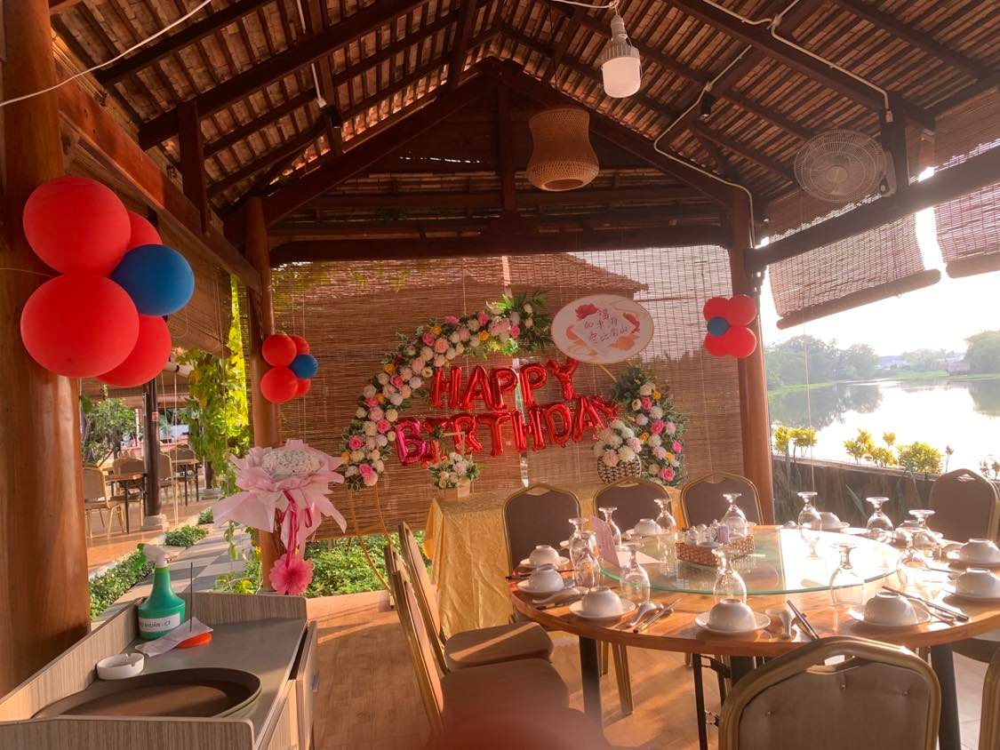
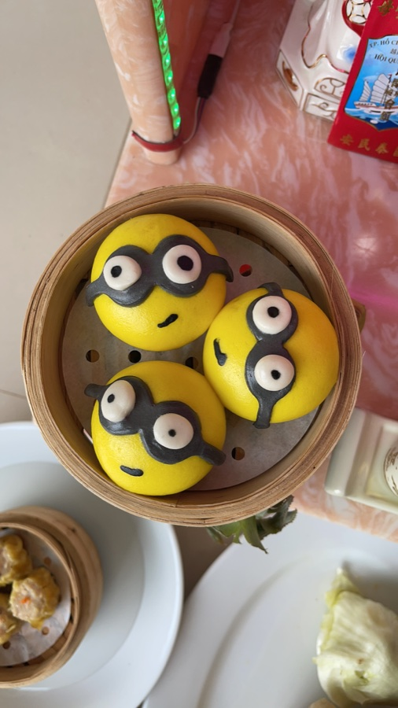

Dùng bữa sân vườn
Gần gũi, thoáng đãng
Những chòi gỗ ấm cúng, lối đi xanh mát và không gian để câu chuyện kéo dài thêm một chút.
Đặt bàn sân vườn
Cần Giuộc · Long An
Ẩm thực Việt – Hoa, chòi sân vườn bên sông và đại sảnh cho bữa ăn gia đình, lễ cưới, tiệc công ty và những dịp thật sự quan trọng.
6:00–21:00Mở cửa mỗi ngày
Sân vườn & đại sảnhTừ bàn gia đình đến tiệc đông khách
30–60 phútPhản hồi trong giờ hoạt động
Bạn đang chuẩn bị cho dịp nào?
Chọn một hướng để Mỹ Yến tư vấn nhanh hơn và giảm bớt việc điều phối cho người tổ chức.
Một điểm đến, hai trải nghiệm
Mỹ Yến kết hợp sự riêng tư của các chòi sân vườn với quy mô của đại sảnh tiệc. Chọn không gian phù hợp với cách bạn muốn gặp gỡ.
Dùng bữa sân vườn
Những chòi gỗ ấm cúng, lối đi xanh mát và không gian để câu chuyện kéo dài thêm một chút.
Đặt bàn sân vườn
Tiệc & lễ cưới
Đại sảnh sáng, rộng và sẵn sàng cho lễ cưới, sinh nhật, liên hoan và những buổi gặp gỡ quy mô lớn.
Lên kế hoạch sự kiệnSuất ăn hằng ngày
Mỹ Yến phục vụ suất ăn hằng ngày cho văn phòng, công ty, nhà máy và cơ sở sản xuất. Chúng tôi tư vấn giải pháp theo số lượng người dùng bữa, lịch phục vụ và nhu cầu riêng của từng đơn vị.
Bữa trưa tiện lợi để đội ngũ có thời gian nghỉ ngơi và kết nối.
Kế hoạch suất ăn phù hợp với lịch làm việc và quy mô nhân sự.
Trao đổi trực tiếp để xây dựng phương án phục vụ phù hợp với doanh nghiệp.

Sự kiện tại Mỹ Yến
Chúng tôi giúp bạn chọn không gian, thời điểm và thực đơn cho lễ cưới, tiệc sinh nhật, mừng thọ, gặp mặt gia đình, liên hoan công ty và các dịp đặc biệt.
Điều thực khách ghi nhớ

Thực khách thường nhắc đến dim sum làm tươi, món Việt – Hoa đậm vị, không gian ven sông thoáng mát và đội ngũ tận tình.
Xem Mỹ Yến trên Google

Nhà Hàng Mỹ Yến
Tại Mỹ Yến, ẩm thực Việt – Hoa gặp gỡ trong một nơi chốn dành cho gia đình, bè bạn và những cột mốc cần được nhớ. Từ món hải sản tươi sống đến vịt quay, canh tiềm và những món ăn cho cả bàn, chúng tôi mong mỗi buổi gặp gỡ đều diễn ra một cách đầy đặn.
Ghé thăm Mỹ Yến
Khu phố 4, Đường Nguyễn Thái Bình, Thị trấn Cần Giuộc, Cần Giuộc, Long An.
Giờ mở cửa: Mỗi ngày, 06:00–21:00
Điểm tâm: Mỗi ngày, 06:00–12:00
Hotline: 0948 900 488

Đặt bàn hoặc lên kế hoạch
Gửi yêu cầu. Đội ngũ Mỹ Yến sẽ kiểm tra chỗ trống và liên hệ xác nhận trước khi giữ bàn hoặc báo giá gói tiệc. Chúng tôi phản hồi trong 30–60 phút trong giờ hoạt động.